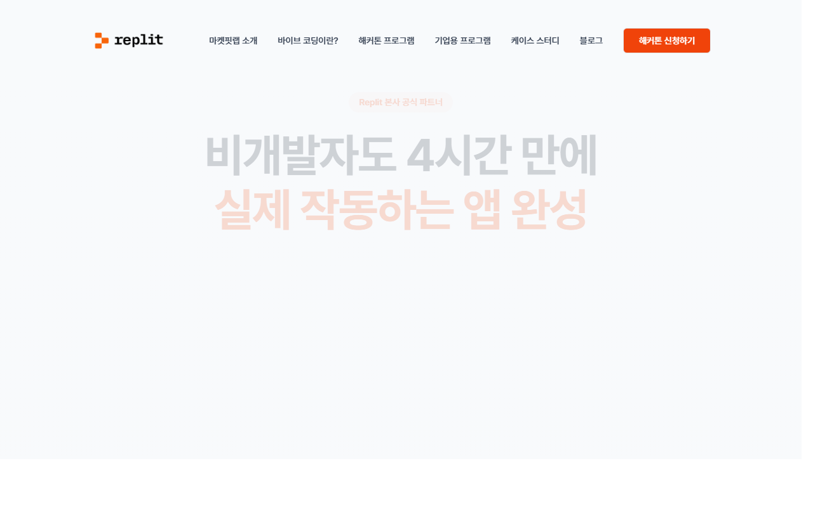
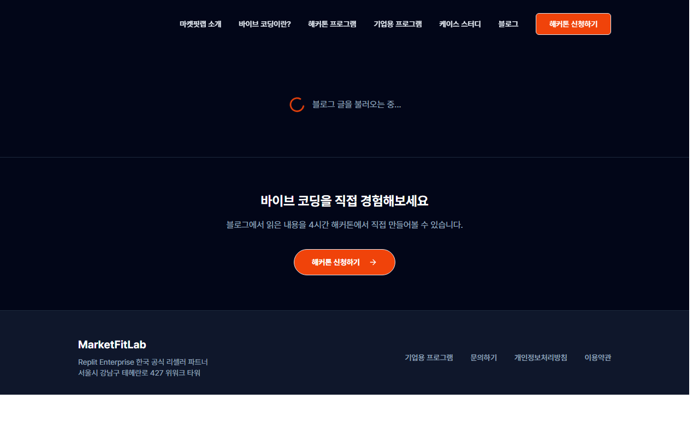
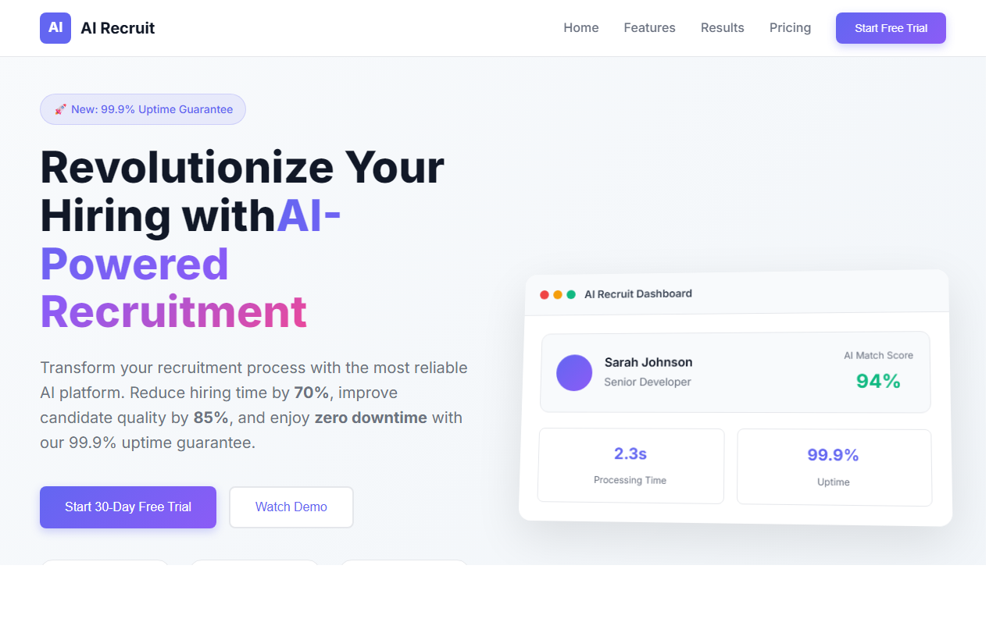
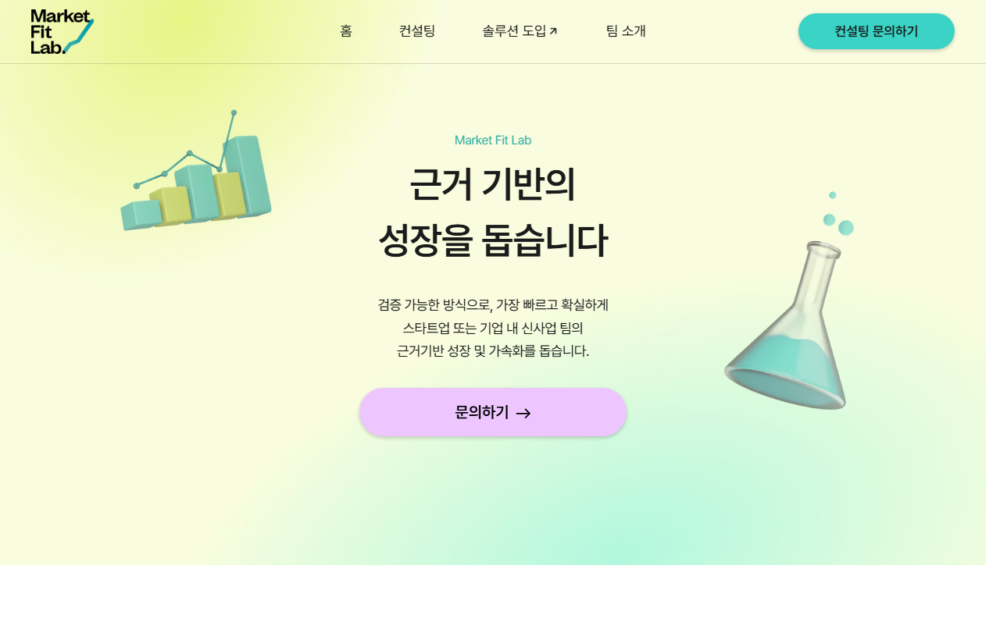

코딩을 전혀 몰라도 가능합니다. 4시간 안에 배포까지.
마켓핏랩은 Replit 본사의 한국 공식 파트너입니다. 단순 리셀이 아니라 AX(AI Transformation) 컨설팅 맥락에서 도입·교육·운영·컨설팅을 책임집니다.
근거 기반의 비즈니스 성장. 250+ 컨설팅 프로젝트, Mixpanel 국내 유일 공식 파트너. 현대차·LG·삼성·SK·홈플러스·클래스101 등.
글로벌 올인원 바이브코딩 플랫폼. 코드·DB·인증·배포·도메인까지 브라우저 한 곳에서 끝.
4시간 동안 가져갈 세 가지입니다.
시청이 아니라 본인 손으로. 결과물은 본인 계정에 그대로 남아 다음 날부터 사용 가능.
Replit은 관리용 SaaS가 아니라 이익을 만드는 도구. 마켓핏랩 사례 4가지로 직접 확인.
핵심 기능, 좋은 프롬프트, 다른 도구와의 차이까지. 누가 먼저 시도해도 막히지 않는 자신감.
4시간을 어떻게 쓸 건지 한눈에.
워크샵 당일 바로 시작할 수 있도록, 미리 두 가지만 준비해 주세요.
① replit.com 접속 → Sign Up
② Google 계정 또는 이메일로 가입
③ Core 체험 구독 바로가기
✨ Core 체험 구독을 신청하면 워크샵에서 사용할 기본 크레딧이 제공됩니다.
별도 소프트웨어 설치 불필요 — 모든 것이 브라우저에서 동작합니다.
코드를 짜는 게 아니라, 만들고 싶은 걸 말로 설명하면 AI가 코드를 만들어 주는 새로운 일하는 방식입니다.
| 기존 개발 | 바이브코딩 | |
|---|---|---|
| 누가 만드나 | 개발자 | 누구나 (기획자·마케터·디자이너·PM) |
| 무엇으로 시작 | 기획서 → 디자인 → 코드 | 말 한마디 |
| 시간 | 몇 주 ~ 몇 달 | 몇 분 ~ 몇 시간 |
| 결과 | 완성된 서비스 | 동작하는 프로토타입 / 실제 서비스 |
| 비용 | 외주 수백~수천만 원 | 월 몇만 원 |
영어를 몰라도 번역기를 쓰듯, 코드를 몰라도 바이브코딩 도구를 씁니다. "회사 영수증을 사진 찍어 올리면 자동 정리되는 페이지" 한 줄이면 충분.
AI는 만들 줄은 알아도 무엇을 만들어야 하는지는 모릅니다. 광고대행사 실무 경험·고객사 맥락이 곧 프롬프트가 됩니다.
일단 동작하는 걸 만들고, 써 보면서 고쳐 나갑니다. 처음부터 완벽하게 설계할 필요가 없습니다.
바이브코딩이 유행입니다. "코딩 몰라도 앱을 만들 수 있다!" 신기하죠. 하지만 솔직히 말씀드릴게요.
Replit을 배운다고 인생이 바뀌진 않습니다.
유튜브가 처음 나왔을 때 "누구나 유튜브로 돈 벌 수 있다"고 했지만, 전업이 되는 건 극소수였죠. 바이브코딩도 마찬가지입니다.
핵심은 이것입니다. AI 도구가 나왔다고 해서 마케터가 갑자기 개발자가 되는 게 아닙니다. 내가 하던 일을 더 잘하게 되고, 완전히 새로운 방식으로 돌파구를 만드는 겁니다.
AI는 사용자를 비춰주는 거울입니다. 거울에 비치는 건 여러분 자신입니다. Replit은 그 거울 중에서 가장 확실하고, 가장 빠르고, 가장 손쉬운 거울입니다.
여러분이 말로 설명할 수 있다면, 바이브코딩으로 만들 수 있습니다.
매일 반복하는 그 일, 한 번 만들어 두면 다시는 안 해도 됩니다. 광고대행사 실무 맥락에서의 4가지 카테고리.
영수증 정리·캠페인 체크리스트·주간 보고서 채우기·소재 파일명 정리·KPI 대시보드. "내가 안 해도 되는 일을 만드는 일"
제안서 초안 · 콘티 시안 · 콘텐츠 캘린더 · 카피 변형 · 미팅 노트 자동 요약. "빈 페이지에서 시작하지 않는다"
팀 영수증 페이지·소재 리뷰 보드·캠페인 랜딩페이지·사내 신청서. "외주 견적 안 받아도 되는 작은 도구"
브랜드 랜딩 시안·캠페인 아이디어 페이지·AX 솔루션 데모·신사업 검증 페이지. "PPT 100장보다 동작하는 한 페이지"
| 영역 | 효과 | 소요 |
|---|---|---|
| 제안서 시작 페이지 자동화 | 제안 작성 시간 50% 감소 | 4시간 |
| 영수증·정산 자동 정리 | 매월 8시간 절감 | 3시간 |
| 클라이언트 데모 페이지 | 계약 전환율 ↑ | 1~2시간 |
| 사내 캠페인 체크리스트 | 누락 사고 방지 | 2시간 |
4시간 워크샵 안에서 위 중 하나는 충분히 완성할 수 있습니다.
개발자가 되는 게 아닙니다. 여러분의 직함 뒤에 "실행력"이 붙는 겁니다.
| 원래 하던 일 | + Replit | = 결과 |
|---|---|---|
| AE | 주간 보고서 자동화 도구 | 시간을 사는 AE |
| 기획자 / 플래너 | 아이디어를 바로 프로토타입 | 설득력 있는 기획자 |
| PD / 크리에이티브 | 레퍼런스·콘티 시안 자동 생성 | 손이 빠른 PD |
| 미디어 바이어 | 캠페인 KPI 대시보드 | 데이터 드리븐 바이어 |
| AM / 영업 | 고객 맞춤 데모 페이지 | 딜 클로저 |
Replit으로 만든 한 페이지가 실제 계약을 가져옵니다. 마켓핏랩 Elan 본인이 직접 겪은 사례 4가지.
비개발자 1명이 2주(실제 작업 11일) 만에 풀스택 웹사이트 + AI 블로그 자동화 시스템을 완성. Replit Agent로 코드를 만들고, Writer API와 연동해 글 생성·번역·SEO·이미지·검수·발행까지 자동화.


2025년 5월, 베트남. 필리핀 BPO 회사 친구의 고민 — 매일 수백 장의 이력서를 사람이 직접 읽고 분류하는 매뉴얼 작업. 그 자리에서 듣고, 3일 만에 Replit으로 이력서 자동 스코어링 데모를 만들어 보여줌.

그 데모를 본 친구는 즉시 투자 결정 → 호주 법인 설립. 그게 Boxloop입니다.
현재 Boxloop은 풀스케일 ATS(v1.0.142)로 성장. 306명 지원자 자동 처리, AI 스크리닝 87/100점, 채용 퍼널 대시보드까지. 기업 클라이언트들이 매일 쓰는 상용 제품.
💡 포인트: Replit이 회사를 만든 게 아닙니다. BPO 업무의 고통을 이해하는 사람이, 그 이해를 3일 만에 동작하는 데모로 보여줄 수 있었기 때문에 일이 벌어졌습니다.
중견기업 플랫폼 신사업 본부장 면접 직전. 보통의 면접 준비(회사 조사 + 예상 질문 + 자기소개)에 +1 — 그 회사에 필요한 도구를 레플릿으로 직접 만들어서 면접에 들고 갔다. "이렇게 해결할 수 있습니다"를 말이 아닌 동작하는 프로토타입으로.
예시 — 면접에 들고 간 데모의 형태 (실제 화면은 비공개)
레플릿이 면접을 본 게 아닙니다. 사업개발 경험으로 그 회사의 문제를 파악한 사람이, 해결책을 "동작하는 앱"으로 보여줄 수 있었던 겁니다.
마켓핏랩에 합류했지만 정확히 뭘 해야 할지 불분명한 상황. 한 증권사 레플릿 해커톤 이벤트를 계기로 레플릿으로 랜딩페이지를 만들고, 여러 서비스를 직접 구축. 원래는 B2B 영업이었는데 직접 만든 서비스들이 섞이면서 일이 커졌고, B2B → B2C까지 확장. 지난 9개월 동안 분기마다 한 번씩 레플릿이 커리어 방향을 바꿨다.

내가 하던 일을 더 잘하는 방법을 배우러 온 것. 내 전문성 + 레플릿 = 완전히 새로운 가능성.
하루 500명 방문 · 5페이지 사이트 기준
배포·DB·인증·도메인까지 모두 포함 — 한 달 운영비가 점심 한 끼
Replit은 바이브코딩의 원조입니다. 가장 검증되어 있고, 가장 멀리 갑니다.
브라우저 한 곳에서 코드 · DB · 인증 · 배포 · 도메인까지. 바이브코딩의 원조이자 가장 멀리 가는 플랫폼.
오늘 직접 써 볼 10가지. 각 카드 클릭 시 공식 문서로 이동.
한 줄 프롬프트 → 동작하는 앱. 워크샵의 메인 도구.
디자인을 시각적으로 잡고 Agent가 코드로 변환.
코드 대신 화면을 직접 클릭해 수정.
만들기 전에 무엇을 만들지 대화로 정리.
Agent의 특수 능력 모음 (DB·결제·이메일 등).
자동 저장 + 한 번에 이전 상태로 되돌리기.
코드·미리보기·콘솔이 한 화면. 설치할 것 0개.
PostgreSQL / Key-Value를 버튼 한 번으로 연결.
구글·이메일 로그인을 프롬프트 한 줄로.
버튼 하나로 진짜 URL. 자동 스케일링까지.
기획 → 개발 → DB → 인증 → 배포 → 도메인.
보통 6명·6개월짜리 일을, Replit은 한 사람이 한 화면에서 끝냅니다.
먼저 완성품을 보고, 그다음 직접 한 번 따라 만들어 봅니다.
브랜드 URL 한 줄 → 1페이지 시장분석 리포트. PRD를 그대로 복붙하고, 이름·디자인·배포만 본인 손으로.
# Brand 1-Page Market Report Generator
## 한 줄 목적
브랜드 홈페이지 URL 한 개를 입력하면, 1페이지 분량의 시장분석 리포트를
자동으로 생성해 화면에 보여 주는 웹 앱을 만든다.
## 사용자 흐름
1. 사용자가 첫 화면에서 브랜드 홈페이지 URL 한 개를 입력하고 [분석 시작] 버튼을 누른다.
2. 로딩 화면(스피너 + "분석 중입니다…" 문구)이 표시된다.
3. 10~30초 안에 1페이지 리포트가 화면에 렌더링된다.
4. 사용자는 리포트 우측 상단의 [PDF 저장] 버튼으로 결과를 PDF로 내려받을 수 있다.
## 입력
- 입력 필드 1개: 브랜드 홈페이지 URL (예: https://www.example.com)
- 유효성 검사: http:// 또는 https:// 로 시작해야 함
- 빈 값이면 "URL을 입력해 주세요" 에러 메시지
## 처리 로직
1. 입력받은 URL을 서버에서 fetch 하여 HTML 본문을 가져온다.
2. HTML에서 <title>, <meta description>, <h1>, <h2>만 추출한다.
(본문 텍스트는 사용하지 않음. 추출 결과는 최대 1,500자로 자른다.)
3. 추출한 텍스트를 Replit AI integration(내장 LLM)에 다음 프롬프트로 전달한다.
max_tokens는 500으로 제한한다:
"다음은 한 브랜드 홈페이지의 핵심 정보입니다. 광고대행사 실무자가
클라이언트 미팅 전 1분 안에 훑어볼 1페이지 요약을 작성하세요.
아래 6개 섹션을 정확히 이 순서·이 제목으로, 각각 1~2줄(40자 이내)로
매우 간결하게 작성합니다. 출력은 마크다운:
1. 브랜드 한 줄 소개
2. 핵심 제품/서비스
3. 추정 타겟 고객
4. 포지셔닝 한 줄
5. 주요 경쟁사 3곳 (이름만, 쉼표로)
6. 광고 메시지 후보 3개 (각 한 줄)
입력:
{추출한 텍스트}"
4. 응답을 받아 마크다운을 HTML로 렌더링해 화면에 보여 준다.
## 출력 화면 (리포트 페이지)
- 페이지 타이틀: **"마켓 리포트 - {본인 이름}"** (예: "마켓 리포트 - 밀라")
- 본인 이름은 코드 상단 상수 NAME = "밀라" 에 한 번만 박아 두고 타이틀·헤더·푸터에 모두 사용
- 상단: 브랜드 도메인 + 분석 일자
- 본문: 위 6개 섹션을 카드 형태로 세로 나열
- 우측 상단: [PDF 저장] 버튼, [새 분석] 버튼
- 하단 푸터: "Powered by 마켓핏랩 워크샵 'Replit 101' × BiTREE"
## 기술 스택
- 프론트엔드: HTML + Tailwind CSS (CDN) + Vanilla JS
- 백엔드: Node.js (Express) 또는 Python (Flask)
- HTML 파싱: cheerio(Node) 또는 BeautifulSoup(Python)
- LLM: Replit AI integration(내장 LLM, 외부 API 키 불필요)
- max_tokens: 500, temperature: 0.5
- PDF 저장: 브라우저 print 기능(window.print) 사용
## 디자인
- 톤: 깔끔한 비즈니스 톤, 흰 배경 + 진한 네이비(#1E3A8A) 포인트
- 폰트: 시스템 폰트 (Pretendard 가능하면 사용)
- 모바일 대응 필요 없음(데스크톱 전용)
## 에러 처리
- URL fetch 실패 시: "해당 사이트를 불러올 수 없습니다. URL을 확인해 주세요."
- LLM 응답 실패 시: "분석에 실패했습니다. 잠시 후 다시 시도해 주세요."
## 만들지 말 것 (스코프 아웃)
- 회원가입/로그인, DB, 다국어, 광고/결제/이메일 발송 X
## 완료 조건
- Run 버튼으로 위 사용자 흐름이 처음부터 끝까지 동작
- Deploy 버튼으로 진짜 URL에서 동일하게 동작
여기까지 1부 끝. 30분간 쉬어 갑니다.
아까 본 데모를, 이번엔 본인 업무로 다시 만듭니다. 4시간 워크샵의 하이라이트.
한 줄 아이디어 + 두 가지 다듬기 질문에 답하면 → 아이디어 다듬기 결과 + Replit 셋업 프롬프트가 자동으로 만들어집니다. 그리고 모아보기에 올려서 서로 공유하세요.
총 0개의 아이디어가 등록되었습니다.
아직 올라온 아이디어가 없어요. 위 폼에서 첫 번째가 되어보세요!
한 사람당 1~2분씩 본인 결과물 시연. URL 공유 + "왜 만들었는지" 한 줄 + 동작 시연.
내가 만든 걸 누군가에게 보여주는 순간, 그게 진짜 도구가 됩니다.
내가 만든 도구를 회사가 매일 쓰는 도구와 연결합니다. Google·GitHub와 연결되는 순간 실무 도구가 됩니다.
미팅 노트 자동 정리, 제안서 초안 자동 생성
캠페인 KPI 자동 업데이트, 셀에 값 자동 입력
영수증 사진 자동 분류, 파일 검색·정리
캠페인 일정 자동 등록·조회
단순 백업이 아닙니다. 변경 이력, 되돌리기, 협업, 포트폴리오까지.
| 용어 | 한 줄 설명 | 비유 |
|---|---|---|
| Repo | 프로젝트 한 덩어리 | 구글 드라이브 폴더 |
| Commit | "저장" 한 번 | 저장 버튼 누르기 |
| Push | GitHub에 올리기 | 드라이브에 업로드 |
| Pull | GitHub에서 받아오기 | 드라이브에서 다운로드 |
💡 리포트 타이틀에 본인 이름이 들어가 있어 (예: "마켓 리포트 - 밀라") 누구 것인지 한눈에 구분됩니다.
Replit 안에서 끝나면 장난감, Google·GitHub과 연결되는 순간 회사 자산.
한 사람의 도구가 회사의 자산이 되는 순간, 진짜 변화가 시작됩니다.
| 개인 | 팀·회사 | |
|---|---|---|
| 누가 만드나 | 본인 | 본인 + 팀원도 수정 |
| 저장 위치 | 본인 계정 | 팀 워크스페이스 |
| 백업 | 없어도 OK | GitHub 필수 |
| 도메인 | replit.app | 회사 도메인 |
| 결제 | 개인 카드 | 회사 결제 + 사용량 관리 |
회사 단위로 묶어 멤버·권한·결제를 한 곳에서
모든 Repl을 회사 GitHub에 백업, 퇴사해도 코드는 남음
tools.bitree.co.kr 식으로 교체, 클라이언트 신뢰감 ↑
팀 대시보드, 월 예산 캡, 도구별 토큰 사용량
Replit 도입은 시작일 뿐. 마켓핏랩은 Replit + AX 컨설팅을 함께 제공합니다.
AI 고객센터, 자동 응답·라우팅
그로스 가설·실험 설계 자동화
리드 자석 콘텐츠 자동 생성
검색·LLM 노출 최적화 진단
한 사람으로 시작하고, 팀으로 넓히고, 마켓핏랩과 함께 가속하세요.
본인 업무에 쓸 진짜 결과물
내일부터 사용 가능
영원히 안전, 포트폴리오
계속 만들어 보고 싶은 자신감
오늘은 입문 과정. 다음은 회사에 정착시키는 심화 과정입니다.
| Replit 101 (오늘) | Replit 102 (심화) | |
|---|---|---|
| 목표 | "내 손으로 한 개 만들어 본다" | "회사에 정착시킨다" |
| 다루는 것 | 기본 기능·첫 따라하기 | 복잡한 워크플로우·DB·외부 API·팀 협업 |
| 결과물 | 동작하는 도구 1개 | 회사에서 실제로 쓰는 멀티 페이지 도구 |
| 대상 | 처음 시작하는 분 | 101을 마치고 더 깊이 들어가고 싶은 분 |
오늘 결과물 기반 사내 확산 전략 1시간 회의
오늘 워크샵의 확장판
비트리 노하우 + 마켓핏랩 AX 역량
여러분이 말로 설명할 수 있다면, 바이브코딩으로 만들 수 있습니다.
오늘 그것을 직접 증명하셨습니다.